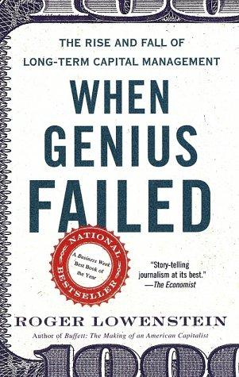

罗杰·洛温斯坦（Roger Lowenstein）是美国著名财经作家，曾长期担任《华尔街日报》记者，著有多部商业史经典，包括巴菲特传记《沃伦·巴菲特传》（Buffett: The Making of an American Capitalist）。《天才的失败》（When Genius Failed）于2000年10月出版，是对长期资本管理公司（Long-Term Capital Management，LTCM）兴衰始末的第一部系统性叙述。洛温斯坦在撰写此书时获得了大量内部备忘录和关键人物的第一手访谈，将一个极具戏剧性的金融事件写成了接近小说质感的纪实叙事。中文版曾以《营救华尔街》和《拯救华尔街》为题出版。
LTCM由所罗门兄弟公司（Salomon Brothers）前明星交易员约翰·梅里韦瑟（John Meriwether）于1993年创立，合伙人阵容堪称当时对冲基金界最耀眼的星群：诺贝尔经济学奖得主迈伦·斯科尔斯（Myron Scholes）与罗伯特·默顿（Robert Merton）均在其列，联储理事会前副主席戴维·穆林斯（David Mullins）也是创始团队成员。LTCM的核心策略是利用数学模型发现不同市场中价差错配（convergence trades）的套利机会，配合高度杠杆放大收益。基金成立前四年年均回报率逾40%，吸引了全球各大银行和机构投资者。洛温斯坦细腻地还原了模型驱动型投资的内在张力：它依赖历史数据推断的相关性，而相关性在危机时刻往往失灵——1998年俄罗斯债务违约与亚洲金融危机引发的全球市场联动，彻底摧毁了LTCM赖以运作的统计假设，基金在数周内从百亿资产规模濒临清盘，迫使美联储出面协调十四家大型银行联合注资救援。
《柯克斯书评》（Kirkus Reviews）称此书是"一部娱乐性与知识性兼备的历史，洛温斯坦擅长解释深奥的金融话题"。该书被评为《商业周刊》年度最佳商业书籍，至今仍是商学院和对冲基金从业者的必读文本之一。洛温斯坦在书中引用了凯恩斯（John Maynard Keynes）的名言——"市场保持非理性的时间，可以比你保持偿付能力的时间更长"——这句话在LTCM案例中得到了精确的注解。
《天才的失败》对投资者的警示极为深刻：模型的精确性并不等同于对现实的把握。LTCM的合伙人们相信可以通过数学消除风险，却忽视了模型本身也是对历史的描述，而历史会创造从未有过的极端情境。书中最耐人寻味的悖论在于：LTCM越成功，追随者越多，其交易所依赖的价差就越小，杠杆就越高，最终在同一个危机中所有策略同时崩溃。这是关于系统性风险与群体行为的一课，在2008年金融危机中再度被应验。